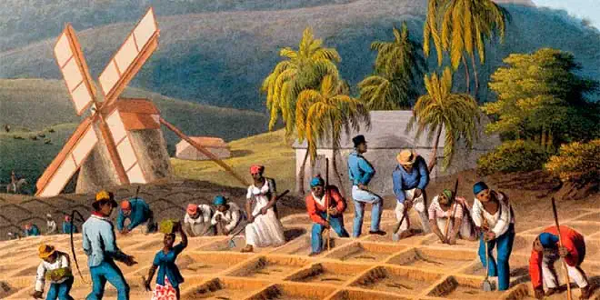
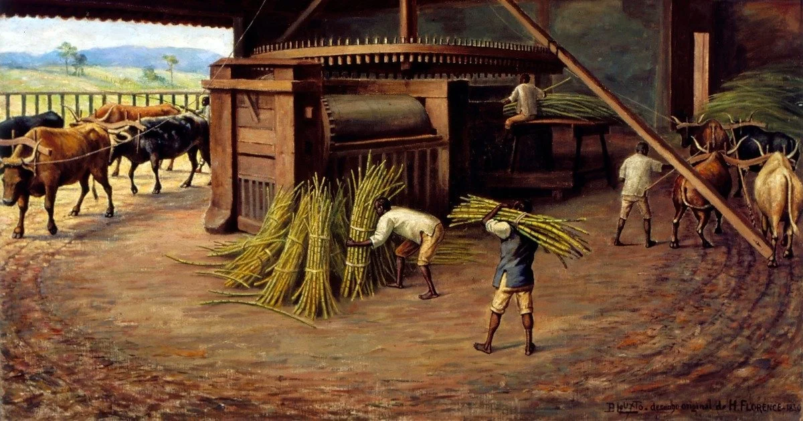
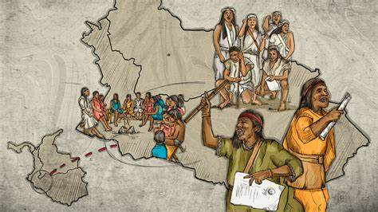

Nunca chegou a acontecer uma substituição do trabalho indígena pelo trabalho do negro escravizado. Os povos originários seguiram sendo largamente requeridos pelas economias e sociedades coloniais do Brasil, mesmo depois da chegada dos africanos ao Brasil colonial.
Dentre as mais graves incompreensões da história e historiografia do Brasil, uma, a respeito dos povos indígenas, é particularmente enganosa e carregada de preconceitos ainda atualmente. Foram os povos originários incapazes ao trabalho regular e penoso exigido pelas lavouras de açúcar e, por isso, teriam sido “substituídos” pelos africanos ainda no alvorecer da colonização portuguesa? Da maneira como é comumente colocada, a pergunta em si conduz a respostas limitadoras a respeito da importância dos indígenas na construção das sociedades coloniais portuguesas na América. Nesse sentido, impõe-se recuperar a qualidade do problema historiográfico buscando compreender como, a partir de experiências históricas precisas, os nativos tiveram seus modos de vida transformados, mas também responderam assertivamente ao contato com os europeus.
A história do trabalho é, nesse sentido, um campo privilegiado de observação das interações socioeconômicas e políticas que, no mais das vezes marcadas pela violência, também foram repletas de significados e sobrevivências. A historiografia tem revisitado essa questão e os achados são surpreendentes. Ao contrário do que se disse até bem pouco tempo atrás, não foi uma suposta “indolência” indígena a responsável pela adoção, na sequência, do trabalho africano nas economias da América portuguesa, com ênfase àquelas voltadas ao mercado externo. Embora a ideia da “inapetência nativa” para o trabalho regular em moldes ocidentais tenha uma longa duração, remontando aos relatos dos cronistas coloniais, recentemente uma abordagem mais complexa tem sido elaborada.
Novos olhares
Assoladas por guerras, escravidão e doenças, as populações ameríndias da costa do Brasil foram drasticamente reduzidas ou tiveram que migrar para o interior ainda no século XVI, fato que, além da tragédia humana que representou, exerceu uma forte pressão sobre o mundo dos engenhos de açúcar, que dependia do fornecimento constante de braços para funcionar adequadamente e responder à crescente demanda europeia pelo “ouro branco”. Este será um dos motivos fundamentais para a adoção massiva do trabalho africano nas lavouras e a ativação do mercado atlântico de escravos a partir do século XVII.
Quando estava já com a tese escrita e prestes a ser defendida, após analisar centenas de documentos e mapas, a professora recordou-se da menção à mulher. “Fiquei pensando no que teria acontecido a ela, que nunca mais foi mencionada em tudo que li. Por que nunca mais apareceu? Caiu num buraco? Eu desconfiei que ela fosse capaz de se comunicar com povos não falantes do tupi-guarani, os quais o governador Dom Luis sabia que habitavam a região a ser mapeada.” Mas há muitas outras causas. Por meio de guerras e fugas, a resistência de indivíduos e comunidades que, tendo seus territórios invadidos, conheciam muito bem as matas, caminhos e perigos, será razão de vários impedimentos quanto ao controle do trabalho nativo. Seja como for, as fontes e documentos de época, atualmente analisados pelos historiadores, são fartos na demonstração de que, mesmo com tantos percalços, parte significativa dos contatos entre indígenas e portugueses tinha relação direta com a expectativa destes últimos quanto ao acesso a “exércitos de mão de obra”, fosse por meio do cativeiro – aplicado, em tese, aos índios inimigos e não-submetidos a partir das chamadas “guerras justas” e dos “resgates” –, ou outras tantas modalidades laborais, como o assalariamento e os contratos, que garantiam, após difíceis acordos com os missionários e chefes indígenas, o uso de parte dos contingentes dos aldeamentos nas economias coloniais.
Junto ao trabalho africano nas lavouras da agro exportação, os povos originários seguiram sendo largamente requeridos no Brasil colonial, tendo atuado, dentre outras atividades, no transporte das caixas de açúcar, navegando suas canoas por entre os rios até os portos da costa; na produção de alimentos, como verduras, hortaliças e a mandioca, base da nutrição colonial; no extrativismo das drogas do sertão no Maranhão e Grão-Pará; na derrubada das matas para extração de madeiras e abertura de novas áreas agricultáveis; além de terem sido fundamentais na realização de obras públicas nas cidades, nos afazeres domésticos e como contingente militar imprescindível em guerras de conquista e defesa travadas contra os inimigos da Coroa portuguesa, fossem eles estrangeiros ou os temidos “índios bravos”.
“Entendi que seria necessário desenvolver novos métodos para conseguir extrair informações sobre a espacialidade da mulher indígena das muitas camadas da narrativa elaborada pelos soldados (alguns inclusive missionários beneditinos), que foram capazes de apagar a presença dela nos empreendimentos de mapeamento”, diz a pesquisadora. O caminho imaginado pela pesquisadora, e que deu certo, foi associar recursos da etnografia e do conceito de ciência colaborativa que vem desenvolvendo, a partir de uma perspectiva de gênero, para identificar a contribuição dessas mulheres à cartografia do século 18. “O registro etnográfico, escrito ou visual, embora seja conformado por seleções específicas dos etnógrafos de uma certa época, e também deva ser submetido à crítica, é valioso porque documenta, de forma detalhada e sistemática, as características culturais, sociais e comportamentais de um grupo étnico ou comunidade”, define Denise.As vivas culturas indígenas também foram campo da atenta observação e experimentação dos colonizadores, que adotaram os remédios da farmácia indígena, a culinária e as cartografias nativas, todos conhecimentos preciosos nas tentativas de controle colonial sobre as sociobiodiversidades americanas.
Legislação e práticas sociais
Entre os séculos XVI e XVIII, as muitas mudanças pelas quais passou a legislação indigenista portuguesa e os grandes debates teológicos e jurídicos sobre os usos, abusos e prioridades do relacionamento com os indígenas denotam o seu alto valor para as sociedades coloniais, da Amazônia ao Rio da Prata. As disposições régias sobre o trabalho alteraram-se ora proibindo ora liberando o cativeiro indígena em situações específicas, mas sempre a partir da imposição de regramentos e restrições à prática muito usual de escravizar índios. Tais alterações legais acompanhavam os embates pelo controle dessas populações, mas também os acordos e negociações arquitetados por elas próprias, além da percepção, alterada ao longo do tempo, que tinham os agentes da colonização a respeito do lugar dos nativos na ordem escravista.
Em meados do século XVIII, época de intensas rivalidades entre as coroas portuguesa e castelhana, foi juízo comum entre os principais administradores do Império luso que a ocupação e colonização do imenso território americano, sobretudo em suas áreas fronteiriças, como a Amazônia, o Centro-Oeste e o Rio da Prata, não estariam plenamente asseguradas sem a incorporação dos indígenas à comunidade de súditos do rei de Portugal por meio de um intenso processo de “ocidentalização”, que envolveu a obrigatoriedade do uso do português, a aprendizagem de métodos e técnicas da agricultura e comércio ocidentais e a imposição da estrutura nuclear da família cristã, modificando até o formato das moradias nativas e incentivando os casamentos mistos entre brancos e índios. Com vários limites em sua aplicação, o objetivo fundamental destas medidas, condensadas no famoso “Diretório dos Índios” (1757), instrumento legal elaborado pelo governador do Estado do Grão-Pará e Maranhão, general Francisco Xavier de Mendonça Furtado, era o apagamento das identidades étnicas e a transformação dos índios em soldados leais e súditos operosos. Doutra feita, fazia parte das preocupações da Coroa portuguesa, à época do Diretório (que vigorou até 1798), acabar com o antigo controle exercido pelos jesuítas sobre o trabalho indígena, reduzindo o poder dos missionários nos aldeamentos graças à elevação destes à categoria de vilas secularizadas, com responsabilidades administrativas similares àquelas dos “não-índios”.
Povos indígenas: muito além de “mão-de-obra”
Todavia, para além da importante compreensão a respeito dos sentidos e lógicas coloniais impostos às sociedades indígenas da América, como no tocante ao trabalho em moldes ocidentais, também deve ocupar-nos o conhecimento sobre seus variados modos de viver e relacionar-se com o ambiente, respeitando-os em sua alteridade e abandonando, assim, ultrapassadas concepções que, ao longo do tempo, tentaram justificar massacres, desrespeitos e graves violações contra suas identidades e seus territórios. Decerto, conhecer esses passados, que revelam histórias do trabalho e das culturas indígenas muito mais complexas e dinâmicas do que comumente se disse, pode ajudar-nos a dialogar, em outras bases, com os presentes indígenas, nossos parentes..
